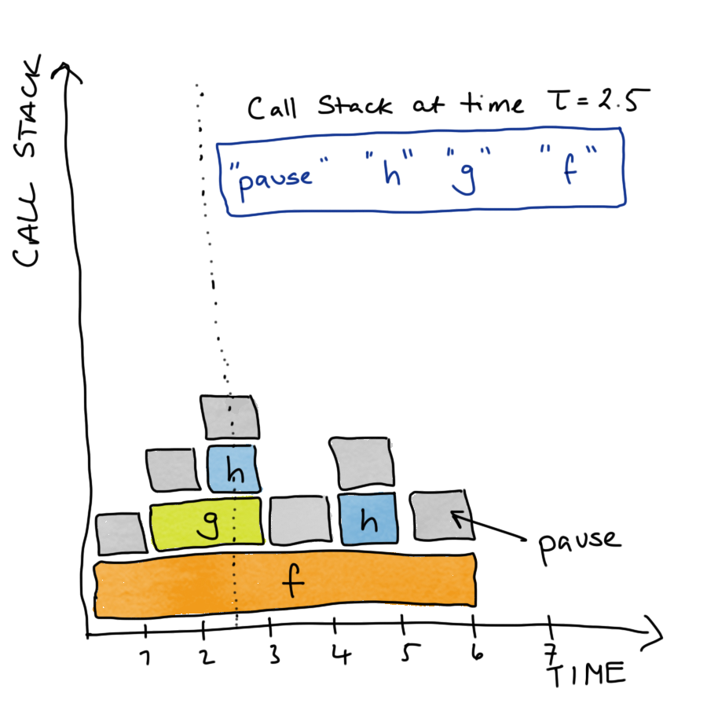
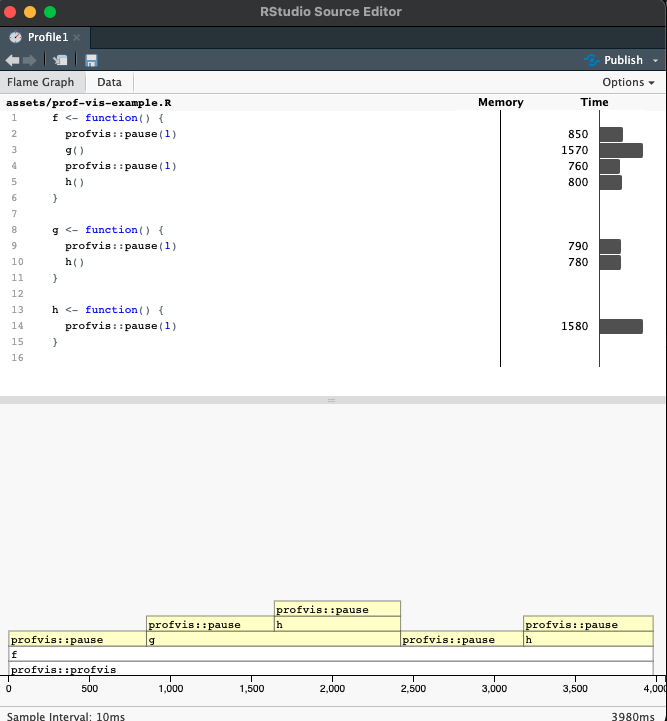
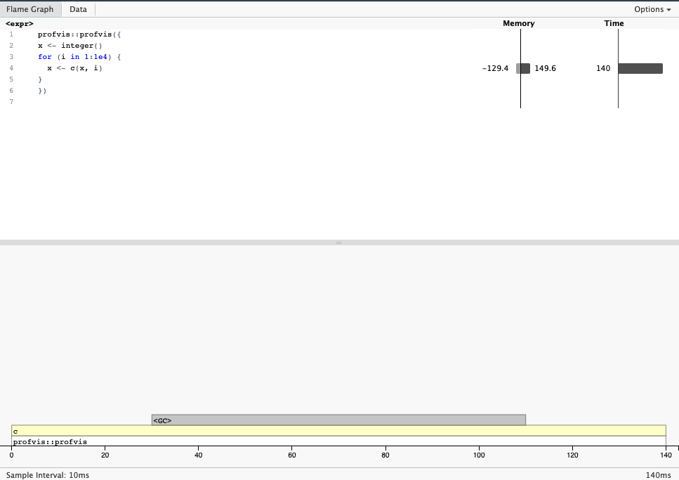
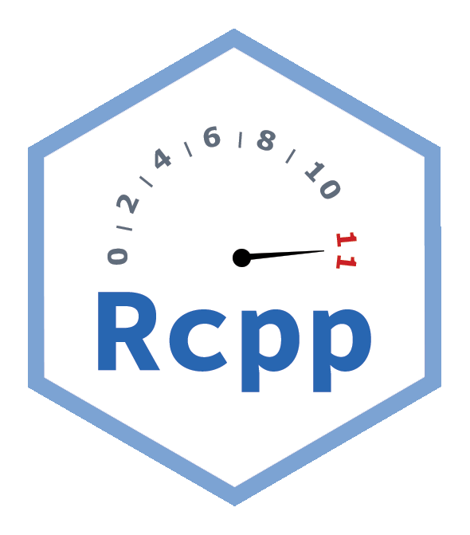

12 Scalability
Important
Effective Data Science is still a work-in-progress. This chapter is currently a dumping ground for ideas, and we don’t recommend reading it.
If you would like to contribute to the development of EDS, you may do so at https://github.com/zakvarty/data_science_notes.
12.1 Scalability and Production
When put into production code gets used more and on more data. We will likely have to consider scalability of our methods in terms of
Computation time
Memory requirements
When doing so we have to balance a trade-off between development costs and usage costs.
12.1.1 Example: Bayesian Inference
MCMC originally takes ~24 hours
Identifying and amending bottlenecks in code reduced this to ~24 minutes.
Is this actually better? That will depend on a number of factors, including:
- human hours invested
- frequency of use
- safe / stable / general / readable
- trade for scalability
12.1.2 Knowing when to worry
Sub-optimal optimisation can be worse than doing nothing
… programmers have spent far too much time worrying about efficiency in the wrong places and at the wrong times; premature optimisation is the root of all evil (or at least most of it) in programming. - Donald Knuth
12.1.3 Our Focus
Writing code that scales well in terms of computaiton time or memory used is a huge topic. In this section we restrict our aims to:
- Basic profiling to find bottlenecks.
- Strategies for writing scalable (R) code.
- Signpost advanced methods & further reading.
12.2 Basics of Code Profiling
12.2.1 R as a stopwatch
The simplest way to profile your code is to time how long it takes to run. There are three common ways to do this.
Firstly, you could record the time before your code starts executing, the time it completes and look at the difference of those.
The system.time function provides a shorthand for this if your code runs sequentially and extends the functionality to work for parallel code too.
system.time(
Sys.sleep(0.5)
)
#> user system elapsed
#> 0.000 0.000 0.503The tictoc package has similar features, but also allows you to add intermediate timers to more understand which parts of your code are taking the most time to run.
With tictoc we can get fancy
If your code is already very fast (but will be run very many times, so further efficiency gains are required) then the methods may fail because they do not sample the state of the code at a high enough frequency. In those cases you might want to explore the {mircobenchmark} package.
12.3 Profiling Your Code
To diagnose scaling issues you have to understand what your code is doing.
-
Stop the code at time \(\tau\) and examine the call-stack.
- The current function being evaluated, the function that called that, the function that called that, …, top level function.
Do this a lot and you can measure (estimate) the proportion of working memory (RAM) uses over time and the time spent evaluating each function.
12.3.1 Profiling: Toy Example
Suppose we have the following code in a file called prof-vis-example.R.
Then the call stack for f() would look something like this.

We can examine the true call stack using the profvis() function from the profvis package. By saving the code in a separate file and sourcing it into our session, this function will also give us line-by-line information about the time and memory demands of our code.

In both the upper histogram and the lower flame plot we can see that the majority of time is being spent in pause() and h(). What we have to be careful of here is that the upper plot shows the total amount of time in each function call, so h() appears to take longer than g(), but this is because it is called more often in the code snippet we are profiling.
12.4 Notes on Time Profiling
We will get slightly different results each time you run the function
- Changes to internal state of computer
- Usually not a big deal, mainly effects fastest parts of code
- Be careful with stochastic simulations
- Use
set.seed()to make a fair comparison over many runs.
12.4.1 Source code and compiled functions
If you write a function you can see the source of that function by calling it’s name
pad_with_NAs
#> function(x, n_left, n_right){
#> c(rep(NA, n_left), x, rep(NA, n_right))
#> }This is equally true for functions within packages.
eds::pad_with_NAs
#> function (x, n_left, n_right)
#> {
#> stopifnot(n_left >= 0)
#> stopifnot(n_right >= 0)
#> stopifnot(class(x) %in% c("character", "complex", "integer",
#> "logical", "numeric", "factor"))
#> c(rep(NA, n_left), x, rep(NA, n_right))
#> }
#> <bytecode: 0x7fe0f7a15068>
#> <environment: namespace:eds>Some functions use compiled code that is written in another language. This is the case for dplyr’s arrange(), which calls some compiled C++ code.
dplyr::arrange
#> function (.data, ..., .by_group = FALSE)
#> {
#> UseMethod("arrange")
#> }
#> <bytecode: 0x7fe0f75d4a70>
#> <environment: namespace:dplyr>It is also true for many functions from base R, for which there is (for obvious reason) no R source code.
mean
#> function (x, ...)
#> UseMethod("mean")
#> <bytecode: 0x7fe0f801dc80>
#> <environment: namespace:base>These compiled functions have no R source code, and the profiling methods we have used here don’t extend into compiled code. See {jointprof} if you really need this profiling functionality.
12.5 Memory Profiling
profvis() can similarly measure the memory usage of your code.

- Copy-on-modify behaviour makes growing objects slow.
- Pre-allocate storage where possible.
- Strategies and structures, see R inferno and Effecient R.
12.6 Tips to work at scale
TL;DR: pick your object types carefully, vectorise your code and as a last resort implement your code in a faster language.
12.6.1 Vectorise
Two bits of code do the same task, but the second is much faster, because it involves fewer function calls.
x <- 1:10
y <- 11:20
z <- x * yWhere possible write and use functions to take advantage of vectorised inputs. E.g.
Be careful of recycling!
12.6.2 Linear Algebra
More on vectorising: Noam Ross Blog Post
12.7 For loops in disguise
12.7.1 The apply family
Functional programming equivalent of a for loop. [apply(), mapply(), lapply(), …]
Apply a function to each element of a list-like object.
A <- matrix(data = 1:12, nrow = 3, ncol = 4)
A
#> [,1] [,2] [,3] [,4]
#> [1,] 1 4 7 10
#> [2,] 2 5 8 11
#> [3,] 3 6 9 12# MARGIN = 1 => rows, MARGIN = 2 => columns
apply(X = A, MARGIN = 1, FUN = sum)
#> [1] 22 26 30This generalises functions from matrixStats, where for some special operations we can do all to the necessary calculation in C++.
rowSums(A)
#> [1] 22 26 30
12.7.2 {purrr}
Iterate over a single object with map().
Iterate over multiple objects map2() and pmap().
For more details and variants see Advanced R chapters 9-11 on functional programming.
12.8 Easy parallelisation with furrr
{parallel}and{futures}allow parallel coding over multiple cores.Powerful, but steep learning curve.
furrr makes this very easy, just add
future_to purrr verbs.
mu <- c(-10, 0, 10)
furrr::future_map(
.x = mu,
.f = rnorm,
.options = furrr::furrr_options(seed = TRUE),
n = 5)
#> [[1]]
#> [1] -11.517739 -9.971712 -10.091494 -9.998209 -11.119109
#>
#> [[2]]
#> [1] -0.6174294 -0.6262866 -1.0103054 0.8649073 0.1553079
#>
#> [[3]]
#> [1] 9.588126 10.771581 9.130382 12.281578 10.278003This is, of course excessive for this small example!
One thing to be aware of is that we need to be very careful handling random number generation in relation to parallelisation. There are many options for how you might want to set this up, see R-bloggers for more details.
12.9 Sometimes R doesn’t cut it

RCPP: An API for running C++ code in R. Useful when you need:
- loops to be run in order
- lots of function calls (e.g. deep recursion)
- optimised data structures
Rewriting R code in C++ and other low-level programming languages is beyond our scope, but good to know exists. Starting point: Advanced R Chapter 25.
12.10 Wrapping up
Summary
- Pick you battles wisely
- Target your energy with profiling
- Scale loops with vectors
- Scale loops in parallel processing
- Scale in another language
Help!
- Articles and blog links
- The R inferno (Circles 2-4)
- Advanced R (Chapters 23-25),
- Efficient R (Chapter 7).